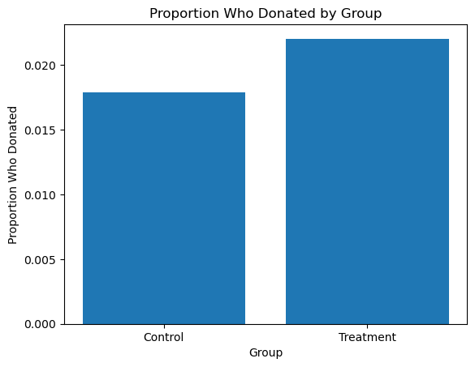
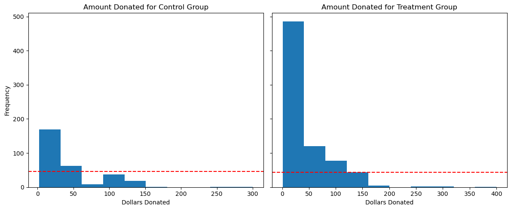
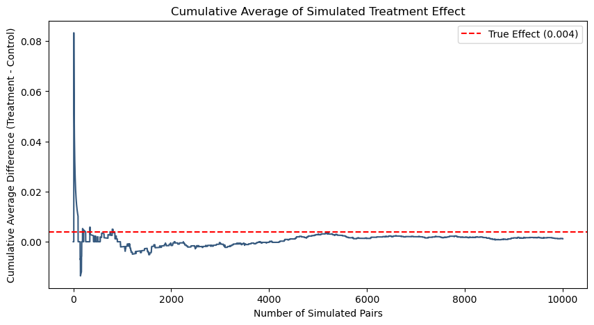
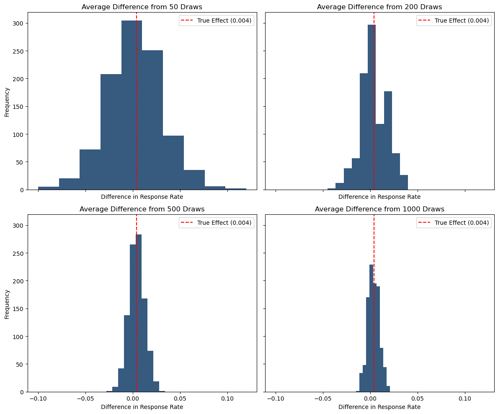

import pandas as pd
import numpy as np
from scipy.stats import ttest_ind
import pyrsm as rsm
import matplotlib.pyplot as plt
import seaborn as sns
df = pd.read_stata('karlan_list_2007.dta')School
MGTA495
test_variables = ['hpa', 'freq', 'female', 'redcty', 'bluecty']
for var in test_variables:
control = df.loc[df.treatment == 0, var].dropna()
treatment = df.loc[df.treatment == 1, var].dropna()
t_stat, pval = ttest_ind(control, treatment)
print(f'''
t-statistic: {t_stat}
p-value: {pval}
At the 95% confidence level, we {pval < 0.05 and "reject" or "fail to reject"}
the null hypothesis that the mean {var}
of the two samples are equal.''')
m = rsm.model.regress(data=df,
rvar=var,
evar=['treatment'],
)
print(f'Linear regression results for {var}:')
print(m.summary(main=False))
t-statistic: -0.944145044786662
p-value: 0.34510008823759086
At the 95% confidence level, we fail to reject
the null hypothesis that the mean hpa
of the two samples are equal.
Linear regression results for hpa:
R-squared: 0.0, Adjusted R-squared: -0.0
F-statistic: 0.891 df(1, 50081), p.value 0.345
Nr obs: 50,083
None
t-statistic: 0.11089297035979982
p-value: 0.9117016644344591
At the 95% confidence level, we fail to reject
the null hypothesis that the mean freq
of the two samples are equal.
Linear regression results for freq:
R-squared: 0.0, Adjusted R-squared: -0.0
F-statistic: 0.012 df(1, 50081), p.value 0.912
Nr obs: 50,083
None
t-statistic: 1.7583691871450704
p-value: 0.07869095826986476
At the 95% confidence level, we fail to reject
the null hypothesis that the mean female
of the two samples are equal.
Linear regression results for female:
R-squared: 0.0, Adjusted R-squared: 0.0
F-statistic: 3.092 df(1, 48970), p.value 0.079
Nr obs: 48,972
None
t-statistic: -0.9041867297482356
p-value: 0.3659007540247129
At the 95% confidence level, we fail to reject
the null hypothesis that the mean redcty
of the two samples are equal.
Linear regression results for redcty:
R-squared: 0.0, Adjusted R-squared: -0.0
F-statistic: 0.818 df(1, 49976), p.value 0.366
Nr obs: 49,978
None
t-statistic: 0.8535382534940722
p-value: 0.3933649744168656
At the 95% confidence level, we fail to reject
the null hypothesis that the mean bluecty
of the two samples are equal.
Linear regression results for bluecty:
R-squared: 0.0, Adjusted R-squared: -0.0
F-statistic: 0.729 df(1, 49976), p.value 0.393
Nr obs: 49,978
NoneThe results of the t-test and linear regression analysis on these explanatory variables affirm that that treatment and control groups are not statistically significantly different, at the 95% confidence level.
gave_df = df.groupby('treatment')['gave'].mean()
gave_df.index = gave_df.index.map({0: 'Control', 1: 'Treatment'})
plt.bar(gave_df.index, gave_df.values)
plt.title('Proportion Who Donated by Group')
plt.xlabel('Group')
plt.ylabel('Proportion Who Donated')
display(gave_df)
plt.show()treatment
Control 0.017858
Treatment 0.022039
Name: gave, dtype: float64
control = df.loc[df.treatment == 0, 'gave'].dropna()
treatment = df.loc[df.treatment == 1, 'gave'].dropna()
t_stat, pval = ttest_ind(control, treatment)
print(f'''
t-statistic: {t_stat}
p-value: {pval}
At the 95% confidence level, we {pval < 0.05 and "reject" or "fail to reject"} the null hypothesis
that the response rate of the two samples are equal.''')
t-statistic: -3.101361000543946
p-value: 0.0019274025949016982
At the 95% confidence level, we reject the null hypothesis
that the response rate of the two samples are equal.import statsmodels.api as sm
import statsmodels.formula.api as smf
probit_model = smf.probit('gave ~ treatment', data=df).fit()
print(probit_model.summary())Optimization terminated successfully.
Current function value: 0.100443
Iterations 7
Probit Regression Results
==============================================================================
Dep. Variable: gave No. Observations: 50083
Model: Probit Df Residuals: 50081
Method: MLE Df Model: 1
Date: Tue, 22 Apr 2025 Pseudo R-squ.: 0.0009783
Time: 17:53:15 Log-Likelihood: -5030.5
converged: True LL-Null: -5035.4
Covariance Type: nonrobust LLR p-value: 0.001696
==============================================================================
coef std err z P>|z| [0.025 0.975]
------------------------------------------------------------------------------
Intercept -2.1001 0.023 -90.073 0.000 -2.146 -2.054
treatment 0.0868 0.028 3.113 0.002 0.032 0.141
==============================================================================Given the low p-value from both the t-test and probit regression, we can conclude that people are more likely to respond to a request for charitable donations when informed that their donations will be met with a matching donation.
df['ratio'] = df['ratio'].astype(str)
df['ratio'] = pd.Categorical(df['ratio'], categories=['Control', '1', '2', '3'], ordered=True)ratio_df = df.groupby('ratio')['gave'].mean()
display(ratio_df)/tmp/ipykernel_9566/157019139.py:1: FutureWarning: The default of observed=False is deprecated and will be changed to True in a future version of pandas. Pass observed=False to retain current behavior or observed=True to adopt the future default and silence this warning.
ratio_df = df.groupby('ratio')['gave'].mean()ratio
Control 0.017858
1 0.020749
2 0.022633
3 0.022733
Name: gave, dtype: float64g1 = '1'
g2 = '2'
group1 = df.loc[df.ratio == g1, 'gave'].dropna()
group2 = df.loc[df.ratio == g2, 'gave'].dropna()
t_stat, pval = ttest_ind(group1, group2)
print(f'''
Response rate for {g1}:1 - {group1.mean()}
Response rate for {g2}:1 - {group2.mean()}
t-statistic: {t_stat}
p-value: {pval}
At the 95% confidence level, we {pval < 0.05 and "reject" or "fail to reject"}
the null hypothesis that the response rate of ratio {g1}:1 and {g2}:1 are equal.''')
Response rate for 1:1 - 0.020749124225276205
Response rate for 2:1 - 0.0226333752469912
t-statistic: -0.96504713432247
p-value: 0.33453168549723933
At the 95% confidence level, we fail to reject
the null hypothesis that the response rate of ratio 1:1 and 2:1 are equal.g1 = '2'
g2 = '3'
group1 = df.loc[df.ratio == g1, 'gave'].dropna()
group2 = df.loc[df.ratio == g2, 'gave'].dropna()
t_stat, pval = ttest_ind(group1, group2)
print(f'''
Response rate for {g1}:1 - {group1.mean()}
Response rate for {g2}:1 - {group2.mean()}
t-statistic: {t_stat}
p-value: {pval}
At the 95% confidence level, we {pval < 0.05 and "reject" or "fail to reject"}
the null hypothesis that the response rate of ratio {g1}:1 and {g2}:1 are equal.''')
Response rate for 2:1 - 0.0226333752469912
Response rate for 3:1 - 0.022733399227244138
t-statistic: -0.05011583793874515
p-value: 0.9600305283739325
At the 95% confidence level, we fail to reject
the null hypothesis that the response rate of ratio 2:1 and 3:1 are equal.g1 = '1'
g2 = '3'
group1 = df.loc[df.ratio == g1, 'gave'].dropna()
group2 = df.loc[df.ratio == g2, 'gave'].dropna()
t_stat, pval = ttest_ind(group1, group2)
print(f'''
Response rate for {g1}:1 - {group1.mean()}
Response rate for {g2}:1 - {group2.mean()}
t-statistic: {t_stat}
p-value: {pval}
At the 95% confidence level, we {pval < 0.05 and "reject" or "fail to reject"}
the null hypothesis that the response rate of ratio {g1}:1 and {g2}:1 are equal.''')
Response rate for 1:1 - 0.020749124225276205
Response rate for 3:1 - 0.022733399227244138
t-statistic: -1.0150255853798622
p-value: 0.3101046637086672
At the 95% confidence level, we fail to reject
the null hypothesis that the response rate of ratio 1:1 and 3:1 are equal.probit_model2 = smf.probit('gave ~ ratio', data=df).fit()
print(probit_model2.summary())Optimization terminated successfully.
Current function value: 0.100430
Iterations 7
Probit Regression Results
==============================================================================
Dep. Variable: gave No. Observations: 50083
Model: Probit Df Residuals: 50079
Method: MLE Df Model: 3
Date: Tue, 22 Apr 2025 Pseudo R-squ.: 0.001108
Time: 17:53:16 Log-Likelihood: -5029.8
converged: True LL-Null: -5035.4
Covariance Type: nonrobust LLR p-value: 0.01091
==============================================================================
coef std err z P>|z| [0.025 0.975]
------------------------------------------------------------------------------
Intercept -2.1001 0.023 -90.073 0.000 -2.146 -2.054
ratio[T.1] 0.0616 0.036 1.726 0.084 -0.008 0.132
ratio[T.2] 0.0980 0.035 2.792 0.005 0.029 0.167
ratio[T.3] 0.0998 0.035 2.847 0.004 0.031 0.169
==============================================================================treatment_df = df.loc[df.treatment == 1].copy()
treatment_df = treatment_df[['gave', 'ratio']].dropna()
treatment_df['ratio'] = pd.Categorical(
treatment_df['ratio'],
categories=['1', '2', '3'],
ordered=True
)
print(treatment_df.groupby('ratio', observed=True)['gave'].mean())
probit_model3 = smf.probit('gave ~ ratio', data=treatment_df).fit()
print(probit_model3.summary())ratio
1 0.020749
2 0.022633
3 0.022733
Name: gave, dtype: float64
Optimization terminated successfully.
Current function value: 0.105851
Iterations 7
Probit Regression Results
==============================================================================
Dep. Variable: gave No. Observations: 33396
Model: Probit Df Residuals: 33393
Method: MLE Df Model: 2
Date: Tue, 22 Apr 2025 Pseudo R-squ.: 0.0001844
Time: 17:53:16 Log-Likelihood: -3535.0
converged: True LL-Null: -3535.6
Covariance Type: nonrobust LLR p-value: 0.5211
==============================================================================
coef std err z P>|z| [0.025 0.975]
------------------------------------------------------------------------------
Intercept -2.0385 0.027 -75.373 0.000 -2.092 -1.986
ratio[T.2] 0.0363 0.038 0.965 0.335 -0.037 0.110
ratio[T.3] 0.0382 0.038 1.015 0.310 -0.036 0.112
==============================================================================print(f'Difference between 3:1 response rate and 2:1 response rate: {ratio_df['3'] - ratio_df['2']}')
print(f'Difference between 2:1 response rate and 1:1 response rate: {ratio_df['2'] - ratio_df['1']}')Difference between 3:1 response rate and 2:1 response rate: 0.00010002398025293902
Difference between 2:1 response rate and 1:1 response rate: 0.0018842510217149944coefs = probit_model2.params
# Coefficients: interpreted as difference from 'Control'
coef_1 = coefs['ratio[T.1]']
coef_2 = coefs['ratio[T.2]']
coef_3 = coefs['ratio[T.3]']
# Compute pairwise differences between levels
diff_3_vs_2 = coef_3 - coef_2
diff_2_vs_1 = coef_2 - coef_1
print(f"3:1 vs 2:1 difference (from regression): {diff_3_vs_2:.4f}")
print(f"2:1 vs 1:1 difference (from regression): {diff_2_vs_1:.4f}")3:1 vs 2:1 difference (from regression): 0.0019
2:1 vs 1:1 difference (from regression): 0.0363mfx = probit_model2.get_margeff()
print(mfx.summary()) Probit Marginal Effects
=====================================
Dep. Variable: gave
Method: dydx
At: overall
==============================================================================
dy/dx std err z P>|z| [0.025 0.975]
------------------------------------------------------------------------------
ratio[T.1] 0.0031 0.002 1.724 0.085 -0.000 0.007
ratio[T.2] 0.0049 0.002 2.786 0.005 0.001 0.008
ratio[T.3] 0.0050 0.002 2.841 0.004 0.002 0.008
==============================================================================marginal_effects = mfx.margeff
print("Marginal effects by ratio level:", marginal_effects)
# Compare 2:1 to 1:1, 3:1 to 2:1
diff_2_vs_1 = marginal_effects[1] - marginal_effects[0]
diff_3_vs_2 = marginal_effects[2] - marginal_effects[1]
print(f"Estimated increase from 1:1 to 2:1: {diff_2_vs_1:.4f}")
print(f"Estimated increase from 2:1 to 3:1: {diff_3_vs_2:.4f}")Marginal effects by ratio level: [0.0030624 0.0048688 0.00496109]
Estimated increase from 1:1 to 2:1: 0.0018
Estimated increase from 2:1 to 3:1: 0.0001control = df.loc[df.treatment == 0, 'amount'].dropna()
treatment = df.loc[df.treatment == 1, 'amount'].dropna()
t_stat, pval = ttest_ind(control, treatment)
print(f'''
t-statistic: {t_stat}
p-value: {pval}
At the 95% confidence level, we {pval < 0.05 and "reject" or "fail to reject"} the null hypothesis
that the donation amount of the two samples are equal.''')
t-statistic: -1.8605020225753781
p-value: 0.06282038947470686
At the 95% confidence level, we fail to reject the null hypothesis
that the donation amount of the two samples are equal.control = df.loc[(df.treatment == 0) & (df.gave == 1), 'amount'].dropna()
treatment = df.loc[(df.treatment == 1) & (df.gave == 1), 'amount'].dropna()
t_stat, pval = ttest_ind(control, treatment)
print(f'''
t-statistic: {t_stat}
p-value: {pval}
At the 95% confidence level, we {pval < 0.05 and "reject" or "fail to reject"} the null hypothesis
that the donation amount of the two samples are equal.''')
t-statistic: 0.5808388615237938
p-value: 0.5614758782284279
At the 95% confidence level, we fail to reject the null hypothesis
that the donation amount of the two samples are equal.donated_treatment = df.loc[(df.gave == 1) & (df.treatment == 1)].copy()
donated_control = df.loc[(df.gave == 1) & (df.treatment == 0)].copy()
fig, axes = plt.subplots(1, 2, figsize=(12, 5), sharey=True)
axes[0].set_ylabel("Frequency")
for val in [0, 1]:
subset = df.loc[(df.gave == 1) & (df.treatment == val)].copy()
axes[val].hist(subset['amount'], bins=10)
axes[val].axhline(y=subset['amount'].mean(), color='r', linestyle='--')
axes[val].set_title(f'Amount Donated for {"Treatment" if val == 1 else "Control"} Group')
axes[val].set_xlabel("Dollars Donated")
plt.tight_layout()
plt.show()
ctr_p = 0.018
trt_p = 0.022
sim_ctr = np.random.binomial(n=1, p=ctr_p, size=10_000)
sim_trt = np.random.binomial(n=1, p=trt_p, size=10_000)
sim_diff = sim_trt - sim_ctr
sim_diff_mean = sim_trt.mean() - sim_ctr.mean()
print(sim_diff.mean())
print(sim_diff_mean)0.0012
0.0012000000000000031cumulative_avg = np.cumsum(sim_diff) / np.arange(1, len(sim_diff) + 1)
# Plot
plt.figure(figsize=(10, 5))
plt.plot(cumulative_avg)
plt.axhline(y=trt_p - ctr_p, color='red', linestyle='--', label='True Effect (0.004)')
plt.title('Cumulative Average of Simulated Treatment Effect')
plt.xlabel('Number of Simulated Pairs')
plt.ylabel('Cumulative Average Difference (Treatment - Control)')
plt.legend()
plt.show()
from cycler import cycler
plt.rcParams['axes.prop_cycle'] = cycler(color=['#375a7f'])
fig, axes = plt.subplots(2, 2, figsize=(12, 10), sharey=True, sharex=True)
axes = axes.flatten()
axes[0].set_ylabel("Frequency")
axes[2].set_ylabel("Frequency")
for ax, size in enumerate([50, 200, 500, 1000]):
samples = []
for i in range(1000):
sim_ctr = np.random.binomial(n=1, p=ctr_p, size=size)
sim_trt = np.random.binomial(n=1, p=trt_p, size=size)
sim_diff_mean = sim_trt.mean() - sim_ctr.mean()
samples.append(sim_diff_mean)
axes[ax].hist(samples, bins=10)
axes[ax].axvline(x=trt_p - ctr_p, color='red', linestyle='--', label='True Effect (0.004)')
axes[ax].legend()
axes[ax].set_title(f'Average Difference from {size} Draws')
axes[ax].set_xlabel("Difference in Response Rate")
plt.tight_layout()
plt.show()